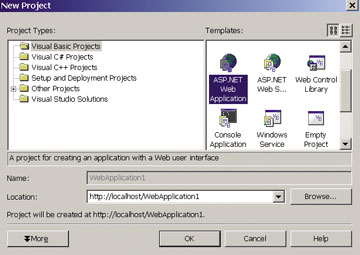
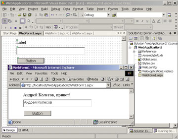
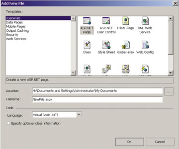

Андрей Колесов
Технология Active Server Pages .NET (ASP .NET) - один из важнейших компонентов всей архитектуры Microsoft .NET. Обоснование этого утверждения вполне очевидно - ведь стратегической целью .NET объявлено создание инфраструктуры для разработки и функционирования распределенных приложений на базе Интернет-стандартов.
Говоря об Интернет-приложениях, мы традиционно подразумеваем в первую очередь Web-приложения, т. е. такие серверные программы, доступ к которым пользователи получают через Web-браузер. Именно для создания подобных Web-приложений предназначена технология ASP .NET. Однако полезно напомнить, что под определение "распределенные" (в классическом его понимании) гораздо больше подходят системы, реализованные на основе иных механизмов удаленного взаимодействия программных компонентов. Применительно к .NET - это технологии XML Web Services (на базе открытых стандартов) и .NET Remoting (внутренние протоколы Microsoft)*.
*О технологиях Web Services и .NET Remoting см. соответственно статьи в "BYTE/Россия" № 9'2001 и "Remoting.NET, или Удаленное взаимодействие объектов есть", "BYTE/Россия" № 4'2002.
Однако, прежде чем перейти к теме ASP .NET, хотелось затронуть один принципиально важный момент. В современном мире нельзя рассматривать технологию в отрыве от проблем маркетинга, т. е. бизнес-модели компании - поставщика этой технологии. Об этом, к сожалению, очень часто забывают в своих дискуссиях даже ИТ-профессионалы. Надо помнить, что для компании-вендора создание программного продукта - лишь средство решения ее коммерческой задачи. (Выбор бизнес-модели под будущие свои продукты могут себе позволить лишь "стартующие" фирмы.)
В кулуарных разговорах мы довольно часто снисходительно говорим о казалось бы откровенных "ляпах" в тех или иных продуктах. Но что скрывается за этими "прорехами" - недальновидность поставщика, его неспособность к решению технических задач или тонкий стратегический расчет? Впрочем, какое дело нам, пользователям, до бизнес-проблем поставщика - мы ведь лишь выбираем наиболее подходящую технологию. Но все обстоит не так просто, хотя бы потому, что эту технологию приходится увязывать со многими другими вещами. И судьба поставщика нам не безразлична - если он обанкротится, то что мы будем делать с его прекрасной технологией?
Именно в контексте этого соображения мне хотелось бы еще раз обратить внимание на вопрос, который я в той или иной степени затрагиваю во всех своих публикациях по этой тематике: что же такое Microsoft .NET?
От ASP к ASP .NET
В конце 1997 г. Microsoft предложила технологию Active Server Pages (ASP) как средство динамического формирования HTLM-страниц. ASP изначально представляет собой часть сервера Microsoft Internet Information Server. ASP .NET (сначала она называлась ASP+) - это новая версия ASP.
Между ASP .NET и ASP довольно много различий. Конечно же, появилось много новых функций и возможностей. Но самое главное заключается в том, что программный код, который в ASP был включен непосредственно в состав HTML-страницы, теперь выделен в отдельный исполняемый модуль, откомпилированный для среды .NET. А код можно создавать с помощью любого языка программирования .NET.
Впрочем, механизм разделения HTML и программного кода был реализован и в старой версии ASP. Многие Web-разработчики заблуждаются, думая, что ASP связана исключительно с применением VBScript или JavaScript. На самом деле IIS задействует технологию Active Scripting, открытые интерфейсы которой позволяют разрабатывать и подключать произвольные языки сценариев. Именно эта возможность используется в Web-компоненте фирмы "1С", предусматривающем создание ASP-приложений с применением встроенного языка "1С:Предприятие 7.7" (см. "Разработка Web-приложений для "1С:Предприятие", "BYTE/Россия" № 4'2001, с. 48).
Более того, вариант создания Web-приложений, реализованный в Visual Basic 6.0 (см. статью "Visual Basic 6.0 упрощает разработку для Web" по адресу http://www.microsoft.com/rus/msdn/library/kolesov), предполагал как раз отделение программного кода от пользовательского интерфейса (HTML-кода) и оформление его в виде ActiveX DLL. Другое дело, что визуальные средства разработки Web-приложений в VB 6.0, хотя и знаменовали прогресс по сравнению с VB 5.0, но были откровенно слабее того, что предлагается для создания обычных Windows-приложений. Да и сама логика Web-разработки была отнюдь не простой.
Здесь мы подходим к формулировке второй задачи, которая стояла перед создателями Visual Studio .NET: сделать так, чтобы разработка Web-приложений была не сложнее программирования традиционных Windows-приложений и чтобы можно было максимально перенести опыт Windows-разработки в сферу Интернета.
Отметим сразу - обе эти задачи (отделение HTML от исполняемого кода и объединение логики разработки для Web и для Windows) в целом Microsoft решила. Но при этом подчеркнем: вся технология ASP .NET функционирует только в среде .NET.
Простейшее Web-приложение
Давайте посмотрим, как выглядит общая логика разработки простейшего приложения ASP .NET. Запустим Visual Studio .NET и создадим новый проект типа ASP .NET с использованием языка Visual Basic (рис. 1). Откроем окно с панелью инструментов Toolbox, выберем на ней вкладку Web Forms и с ее помощью разместим на форме проекта три элемента управления - Label1, TextBox1 и Button1.
|  | Рис. 1. Выбор проекта Web Application в Visual Studio .NET. |
Мы хотим, чтобы при нажатии командной кнопки Button1содержимое текстового поля TextBox1 заносилось в метку Label1. Для этого дважды щелкнем по изображению кнопки и в раскрывшемся окне кода введем программу обработки для события Button1_Click:
Private Sub Button1_Click( _
ByVal sender As System.Object, _
ByVal e As System.EventArgs) Handles Button1.Click
Label1.Text = TextBox1.Text & ", привет!"
End Sub |
Запустим созданный проект на выполнение и убедимся, что он работает, как и было задумано (рис. 2). Как мы видим, разработка Web-приложения практически ничем (по крайнем мере, пока) не отличается от создания традиционной Windows-программы.
|  |
| Рис. 2. Разработка проекта ASP .NET: на заднем плане - окно со средой разработки VS.NET, на переднем - окно Internet Explorer с созданным нами Web-приложением. |
А теперь разберемся, из чего состоит наше простейшее приложение. В правом верхнем углу панели Solution Explorer (рис. 2) мы видим несколько компонентов, но сейчас нас интересует только модуль WebForm1.Aspx, который и является файлом ASP .NET, загружаемым в браузер. Просмотрим его содержимое, открыв вкладку HTML:
<!--Page Language="vb"
AutoEventWireup="false"
Codebehind="WebForm1.aspx.vb"
Inherits="WebApplication2.WebForm1-->
<!--CTYPE HTML PUBLIC "-//W3C//DTD
HTML 4.0 Transitional//E-->
<html />
<head></head>
<meta content="Microsoft Visual Studio.NET 7.0" name="GENERATOR" />
<meta content="Visual Basic 7.0" name="CODE_LANGUAGE" />
<meta content="JavaScript" name="vs_defaultClientScript" />
<meta content="http://schemas.microsoft.com/intellisense/ie5" name="vs_targetSchema" />
<form id="Form1" method="post" runat="server">
<label id="Label1" style="Z-INDEX: 101; LEFT: 69px; POSITION: absolute; TOP: 30px" runat="server" width="316px">
Label</label>
<textbox id="TextBox1" style="Z-INDEX: 102; LEFT: 65px; POSITION: absolute; TOP: 78px" runat="server" width="311px" height="34px" />
<button id="Button1" style="Z-INDEX: 103; LEFT: 68px; POSITION: absolute; TOP: 135px" runat="server" width="123px" height="24px" text="Button"> </button>
</form>
|
Как видно, файл состоит из обычного HTML-кода и включает несколько серверных тегов
Public Class WebForm1
Inherits System.Web.UI.Page
Protected WithEvents Label1 As _
System.Web.UI.WebControls.Label
Protected WithEvents TextBox1 As _
System.Web.UI.WebControls.TextBox
Protected WithEvents Button1 As _
System.Web.UI.WebControls.Button
#Region "Web Form Designer Generated Code"
'Этот код нужен для работы дизайнера web-форм
<system.diagnostics.debuggerstepthrough() /> _
Private Sub InitializeComponent()
End Sub
Private Sub Page_Init( _
ByVal sender As System.Object, _
ByVal e As System.EventArgs) _
Handles MyBase.Init
'CODEGEN: Этот вызов метода нужен
'для работы дизайнера web-форм
'Не изменяйте его в редакторе!
InitializeComponent()
End Sub
#End Region
Private Sub Page_Load( _
ByVal sender As System.Object, _
ByVal e As System.EventArgs) _
Handles MyBase.Load
'Здесь размещается пользовательский код
' для инициализации страницы
End Sub
Private Sub Button1_Click( _
ByVal sender As System.Object, _
ByVal e As System.EventArgs) _
Handles Button1.Click
' эту строку мы написали сами!
Label1.Text = TextBox1.Text & _
", привет!"
End Sub
End Class |
Обратите внимание, что модуль WebForm.aspx.vb (кстати, использование "точки" в составном имени файла представляется крайне неудачной идеей - возникает постоянная путаница с самим названием и типом файла) в явном виде никак не отображен в окне Solution Explorer, так как он должен быть однозначно привязан к основному ASPX-файлу.
Итак, мы создали приложение, затратив минимум усилий, однако отметим одно настораживающее обстоятельство: если мы с помощью функции Search попробуем найти созданный файл проекта WebSollution1, то обнаружим около двух десятков (!) каталогов и файлов с различными расширениями. Конечно, можно сослаться на то, что все они были сформированы автоматически. Но подобное обилие созданных модулей и папок, существующих вне нашего контроля (и вне понимания, зачем они нужны), несет в себе скрытую угрозу надежности работы приложения, не говоря уже о проблеме очистки мусора в файловой системе, если нам это приложение больше не понадобится.
Теперь поставим еще один небольшой эксперимент. Добавим в проект одну командную кнопку, но только не из вкладки Web Forms, а из HTML. В ASPX-файле она будет описана таким тегом:
<input style="Z-INDEX: 104; LEFT: 72px; WIDTH: 123px; POSITION: absolute; TOP: 146px; HEIGHT: 23px" type="button" />
Формирование обрабатывающего кода для кнопки выполняется аналогичным образом (но только сначала нужно правой кнопкой мыши вызвать контекстное меню для этого элемента и указать для него режим Run as Server Control). Однако между двумя вариантами кнопок есть одно принципиальное различие - в обычном HTML-редакторе, например, FrontPage, будут видны только стандартные элементы управления HTML (в нашем случае - одна командная кнопка).
Этот момент представляется очень важным, так как технология разработки Web-приложений, реализованная в VS.NET, принципиально отличается от схемы работы традиционных HTML-редакторов, которые сегодня (пока) не поддерживают работу с отдельными файлами программного кода. Перед искушенными Web-дизайнерами неминуемо возникнет дилемма: воспользоваться мощными средствами программирования VS.NET или богатыми средствами Web-дизайна профессиональных HTML-редакторов?
Какой из этих двух вариантов получит наибольшее распространение, мы увидим в недалеком будущем, но мой прогноз таков: учитывая упорство Microsoft в достижении своих целей, можно практически гарантировать, что независимым разработчикам HTML-редакторов неминуемо придется позаботиться об интеграции с технологией ASP .NET вообще и с Visual Studio .NET в частности.
Специальный инструмент разработки приложений ASP .NET
В июле 2002 г. Microsoft выпустила предварительную "технологическую" версию (Technology Preview) специализированного визуального инструмента для разработки ASP .NET - ASP .NET Web Matrix. Ее можно бесплатно загрузить с сайта http://www.asp.net (дистрибутив 1,2 Мбайт). Авторские права на продукт принадлежат Microsoft, но он был разработан не сотрудниками корпорации, а группой независимых специалистов, которая выполняет заказы ASP-подразделения Microsoft в свободное от основной работы время (среди авторов программы встречаются и русские имена).
Первая строка кода проекта была написана ровно за год до выпуска его "технологического" релиза, сейчас в нем около 150 тыс. строк. ASP .NET Web Matrix написан на C# и .NET Framework, пользовательский интерфейс реализован с помощью Windows Forms, доступ к данным - на базе ADO.NET. Некоторая часть ресурсов и служб пакета (в частности, справочная система) размещена на сервере http://www.asp.net, обращение к ним выполняется через механизм XML Web Services.
Конструктор страниц Web Matrix предоставляет интегрированные средства для создания и редактирования баз данных SQL и MSDE. Код ADO.NET для выполнения SQL-запросов и хранимых процедур генерируется автоматически; связывание данных страниц не требует написания кода. С помощью Web Matrix пользователь может встраивать в свои приложения поддержку XML Web Services, разрабатывать мобильные Web-приложения для таких устройств, как сотовые телефоны, пейджеры и PDA. Для разработки и тестирования приложений ASP .NET не требуется сервер IIS - Web Matrix включает облегченный варианта персонального Web-сервера, в котором многие функции (например, поддержка страниц ASP .NET иXML Web Services) реализованы в локальном режиме.
Пакет также обеспечивает поддержку рабочих пространств на основе FTP или обычной файловой системы, без серверных расширений FrontPage. Предусмотрен встроенный порт для общения с внешним миром, в том числе с различными форумами и группами новостей по тематике ASP .NET.
Будучи удобным специализированным инструментом, Web Matrix все же вряд ли сможет заменить Visual Studio .NET при создании профессиональных приложений. Прежде всего Web Matrix (по крайней мере в предварительном "технологическом" варианте) не поддерживает основную для ASP .NET идею разделения кодов. У него существенно слабее средства отладки, нет редактора с интеллектуальной подсказкой, не говоря уже о применении средств категории Enterprise. Продукт не будет поддерживаться службой Microsoft Product Support Services - вся поддержка будет выполняться онлайновым сообществом независимых разработчиков (http://www.asp.net).
Чтобы познакомиться с Web Matrix, создадим с его помощью простое приложение, аналогичное тому, что мы сделали в VS.NET.
Откройте Microsoft ASP .NET Web Matrix - появится диалоговое окно New File, в котором мы видим несколько различных начальных шаблонов проекта (рис. 3). Обратите внимание, что для каждой категории шаблонов, представленных в левом окне (Data Pages, Mobile Pages и пр.), имеется своя группа типов проектов. Выберите шаблон проекта General и ASP .NET Page, а в списке Language укажите Visual Basic, после чего нажмите OK.
|  | Рис. 3. Web Matrix предлагает разные шаблоны для создания Web-приложений. |
Со вкладки Web Controls панели инструментов Toolbox перетащите на создаваемую страницу элементы управления Label, TextBox и Button. Двойным щелчком на изображении кнопки перейдите к редактированию ее процедуры Button1_Click. Введите следующий код:
Sub Button1_Click(sender As Object, _ e As EventArgs) Label1.Text = "TextBox1.Text & _ "! Тебя приветствует Web Matrix!" End Sub |
Запустите приложение на выполнение и убедитесь в его работоспособности. Теперь рассмотрим содержание созданного приложения. В среде разработки Web Matrix отсутствует панель Solution Explorer, из чего можно сделать предположение (совершенно справедливое), что весь проект состоит из одного ASPX-файла - в нем нет многочисленных дополнительных компонентов, которые мы видели в VS.NET. Нет здесь и отдельного VB-модуля с программным кодом.
Чтобы убедиться в этом, откроем вкладку All основного окна проекта и посмотрим полное содержание файла NewFile.aspx:
<!--Page Language="VB"--> <script runat="server"></script> <html /> <head></head>
<form runat="server">
<div align="left">
<label id="Label1" runat="server" width="467px" height="69px">
Label</label>
</div>
<div align="left">
<textbox id="TextBox1" runat="server" />
</div>
<div align="left">
<button id="Button1" onclick="function anonymous()
{
Button1_Click
}" runat="server" text="Button" />
</div>
<!-- Insert content here -->
</form>
|
Иными словами, ASPX-файл состоит из двух частей - исполняемого (в данном случае VB) кода и HTML-кода (нет двух отдельных файлов, как это сделано в VS.NET). Для удобства работы с ними мы можем использовать вкладки HTML и Code окна проекта. Что интересно - мы можем загрузить в Web Matrix проект, созданный ранее в VS.NET, и запускать его на выполнение. Но редактирование VB-модуля при этом недоступно.
Впрочем, повторим, что пока мы имеем дело лишь с версией Technical Preview, да и вообще, вряд ли стоит всерьез сравнивать бесплатные продукты и коммерческие системы, являющиеся основой бизнес-стратегии огромной корпорации. Тем не менее Web Matrix вполне годится для обучения и реализации небольших проектов, к тому же в нем реализовано несколько очень интересных идей по организации среды разработки.
ASP .NET - что нас ждет впереди
Эта статья не может претендовать даже на введение в ASP .NET. Данной тематике посвящено не менее двух десятков книг (правда, пока по преимуществу выпущенных в США). Отметим только, что в ASP .NET существенно расширена функциональность ASP, улучшена ее способность создавать сложные масштабируемые Web-приложения (отметим, например, новые функции управления сеансами и администрирования, улучшенные средства безопасности).
Для более детального изучения этих вопросов можно рекомендовать англоязычные ресурсы на серверах http://msdn.microsoft.com и http://www.asp.net, в частности, статьи Cache and Carry with ASP .NET (вопросы кэширования для повышения производительности) и Migrating to ASP .NET. Key Considirations (переход от ASP к ASP .NET).
А закончить статью хочу таким размышлением. Многие профессиональные Web-разработчики пока весьма прохладно относятся к технологии ASP, считая ее излишне упрощенной и не очень эффективной (однако обратите внимание - для тиражируемых решений ее применяют довольно часто!). ASP .NET выглядит гораздо более привлекательно благодаря улучшенной функциональности и упрощению самой процедуры разработки. Но самое главное даже не в этом. Обратите внимание, что развитие технологии идет в типичном для Microsoft стиле: корпорация не пытается догонять конкурентов в вопросах, где позиции последних уже очень сильны (например, в Web-дизайне). Microsoft делает акцент на новшества, связанные с ее традиционными преимуществами. Причем реализуется это в виде в целом привлекательных решений, которые при этом не очень соответствуют общепринятым стандартам.
О разделении исполняемого кода и HTML уже говорилось выше. (код можно писать на многих языках программирования, например, Perl, но при условии, что они адаптированы для .NET). Другим принципиальным новшеством технологии ASP .NET стал новый тип компонентов - управляющие элементы Web. Очень важно, что их могут создавать независимые разработчики (причем даже не очень квалифицированные). Тут можно вспомнить, что одной из главных причин успеха VB в начале 90-х годов было создание огромного рынка дополнительных элементов VBX/OCX, которые существенно расширяли возможности самого VB.
Похоже, Microsoft не собирается изменять своим надежным, проверенным методам борьбы за рынок. Кстати, создаваемые с помощью VS.NET новые Web-элементы будут работать только в среде .NET Framework.
Что же такое Microsoft .NET?Однозначного ответа на этот вопрос просто нет: очень многое зависит от того, для чего и кому мы его задаем. Ответы представителей Microsoft, Sun, "1С" или ИТ-подразделения ЦБ РФ будут мало похожи один на другой. Тут правомерна аналогия с понятием "разработка приложений": программист, менеджер проекта и руководитель компании, говоря об этом, будут иметь в виду различный круг решаемых задач. За последний год в связи с темой .NET мне пришлось посетить много презентаций, услышать кулуарных бесед, прочитать немало статей и целый ряд книг. И мне было очень приятно, когда я наконец-то нашел своего полного единомышленника в том, что касается восприятия стратегии Microsoft. Это известный американский разработчик и публицист Дан Эпплман, чья книга "Переход на VB.NET: стратегии, концепции, код" в начале года вышла в переводе на русский в издательстве "Питер". Я считаю эту работу лучшим систематическим анализом архитектуры .NET и рекомендую познакомиться с ней не только тем, кто собирается иметь дело с .NET (не говоря уже о VB-программистах), но и всем тем, кто предполагает в ближайшие несколько лет иметь дело с ИТ на уровне бизнес-решений. Современные технологии программирования и вопросы маркетинга переплетены между собой настолько сильно, что из презентаций и статей даже профессионалам трудно сразу понять, где речь идет о реальных технологических новшествах, а где - лишь о новых названиях старых вещей. Я искренне советую всем программистам познакомиться с книгой Эпплмана еще и потому, что в ней через анализ технологий красной нитью проходит обсуждение вопроса "технология и маркетинг". Вот лишь две цитаты из его книги: "Я искренне верю, что большинство программистов Microsoft стремится написать качественный продукт с единственной целью осчастливить своих коллег-программистов... но я верю и в то, что Microsoft стремится продавать программные продукты и зарабатывать на этом деньги". "В один прекрасный день выяснилось, что Microsoft начинает отставать от Netscape, Sun и других компаний, занимающихся Интернет-технологиями. Немедленно под фанфары появилась новая технология ActiveX. Что такое ActiveX? Это OLE2 с новым названием". Поясню: на протяжении более 10 лет деятельность Дана Эпплмана связана с применением технологий Microsoft, он является признанным авторитетом в американском сообществе разработчиков. При этом он подчеркивает: "Противники Microsoft клеймят меня как "продажного наймита", а ее сторонники - осуждают за "злобные нападки". А вот высказывание Эпплмана как раз по поводу обозначенного выше вопроса о сути .NET: ".NET захлестнул тот же поток маркетинговых статей, недостоверных и обрывочных сведений, вольных интерпретаций и неразберихи, от которой пострадали многие инициативы Microsoft. Не думаю, что вы получите сколько-нибудь вразумительный ответ от сотрудников Microsoft - их ответы слишком сильно зависят от должности и от того, какую презентацию PowerPoint им показали последней". Это было написано год назад. Сейчас, спустя полгода после официального выпуска .NET Framework и Visual Studio .NET, ажиотаж по этому поводу явно пошел на убыль. Это естественно: наступило время проверкой делом маркетинговых заявлений "предстартовой" поры. Но неразбериха в ответе на вопрос "Что такое .NET?" сохраняется и даже усиливается. Сбывается прогноз двухлетней давности - все новые продукты и технологии Microsoft автоматически получают суффикс .NET независимо от сути используемых в них архитектурных решений. Более того, на одной из презентаций прошедшей весной я видел замечательный слайд, на котором к семейству .NET Server были приписаны задним числом все версии Windows 2000. Возвращаясь к вопросу, вынесенному в заголовок этого раздела, я даю на него ранее уже озвученный ответ: Microsoft .NET с точки зрения программиста - это новая среда исполнения программного кода, (виртуальная машина) под названием .NET Framework. И, говоря о создании Web-приложений, нужно отметить самое главное новшество: в .NET достигнут значительный прогресс в том, чтобы стереть различия между традиционным программированием под Windows и Интернет-разработкой. Но при этом Microsoft, как обычно, идет своим путем... |